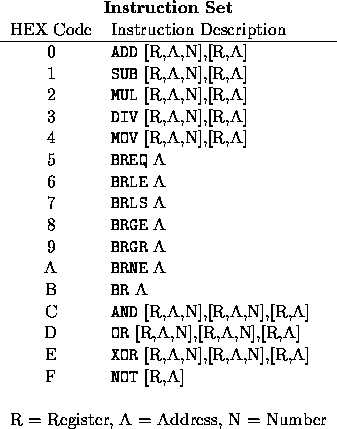
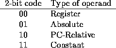

| OOPS! |
You've been sitting in front of the terminal for three hours savagely coding the Assembler assignment that's due tomorrow. Your best friend, who finished the program last week and has been rubbing it in for just as long, saunters up to your terminal and offers, "Coke break, slow poke?" You take the Coke he hands you and you lean your head back, savoring the refreshing feeling of the drink as it soothes your parched throat; too much coding always made your throat raw. "Hey, can I look at how far you've gotten?" your friend asks. "Sure," you reply, taking another long drink. As you're enjoying your drink and thinking of what "The Real Thing" really is, you hear a whispered "oops" from the direction of your terminal. "What?!" you demand. Your friend replies, backing away, "I think I just deleted your source code."
"Arrrgggghhh!" you spurt as your friend runs from the computer lab, mumbling prayers for divine protection. You double check and sure enough all you have left of your precious Assembler assignment is the executable code from your last compile. And you were so close to finishing! Do you take a zero? No, that last test was a killer. Start over? NOT! Instead, your hands fumble for your Assembler textbook.... Ah, here we go: a description of the encoding scheme used by the computer's assembler. It doesn't look too bad and you remember most of the hand disassembling you did in class (Thanks Dr. Baber)! It's decided then, you'll just have to write a quick disassembler to convert the executable code back into your source code so that you can finish your assignment before Cheers comes on. You open your textbook and begin reading:

ADD [R,A,N],[R,A] means that the ADD instruction takes two operands. The first can be a register, an address, or a number, and the second operand is either a register or an address.
Opcodes are 4 bits in length. An operand is made up of two fields: a mode and a value. The mode is two bits and the value is fourteen bits for a total of sixteen bits. The possible values for mode are:

The value field for a register operand (mode = 00) specifies the number of the register. For example, if the value field contained a seven then that would specify register number 7, written "R7". The valid registers are R0 through R1023.
The value field for an absolute operand (mode = 01) specifies the absolute address that the operand is to be stored at. For example, if the value field contained the number 110, that would denote address location 110, which is written "$110". Valid addresses are $0 through $16383.
The value field for a PC-Relative operand (mode = 10) specifies the offset of the address relative to the program counter. (On this computer, all PC-relative offsets are non-negative). For example, if the value field contained the number 45, that would specify the address location (Program Counter) + 45, which is written "PC+45". Valid offsets are from 0 to 16363.
The value field for a constant operand (mode = 11) specifies a constant - a number between 0 and 16383. For example, if the value field contained the number 1276, then that would specify the actual number 1276 and is written as "1276".
Your task is to write a program which will read in a text file that contains the hexadecimal listing of an executable program and output the original source code, one assembler instruction per line. Each line in the text file will contain exactly 30 hexadecimal digits except for the last line which will contain from 1 to 30 hexadecimal digits.
4C00D00004C0020001000000001400 005FFFB801E
MOV 13,R0 MOV 2,R1 ADD R0,R1 MOV R0,$8191 BR PC+30